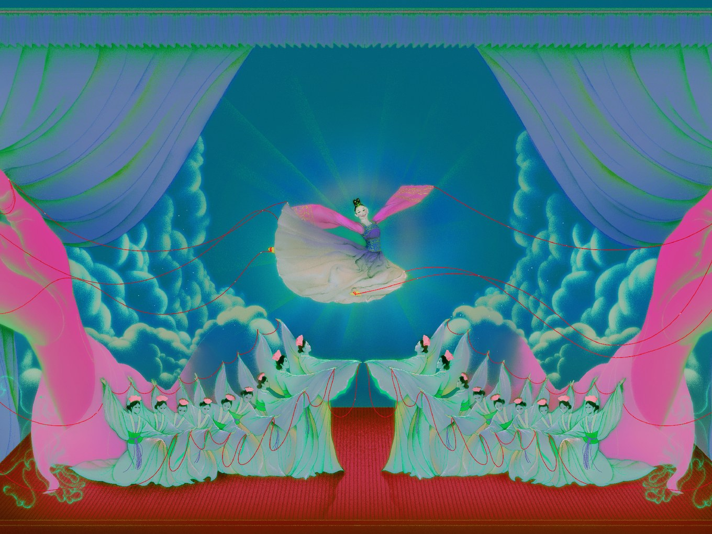
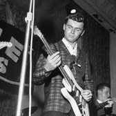

The
New Yorker
News Desk
Dominique Gardner, One of R. Kelly’s Longtime Girlfriends, Speaks Out
Personal History
My Father's Stack of Books

Culture Desk
The Uncanny, Unsettling World of Shen Yun
Does the ubiquitous dance troupe really present five thousand years of civilization reborn?
Letter from London
The Chaotic Triumph of the "Bad Boy of Brexit"
News & Culture
The Software That Shapes Workers’ Lives
On “Shrill” and “Better Things,” Women Stop Being Good Sports
Dick Dale, the Lebanese-American Who Invented Surf Rock
All magazine issues since 2008 are now available in The New Yorker Today app. Download now >>
Spotlight
On Television
Idris Elba makes a Charming Foray into Sitcoms
The Current
In Iowa, See Beto Run
Page-Turner
W.S. Merwin in The New Yorker
The New Yorker Interview
Masha and Keith Gessen on Writing about Russia
Advertisements go here
Subscribe to my Youtube Channel